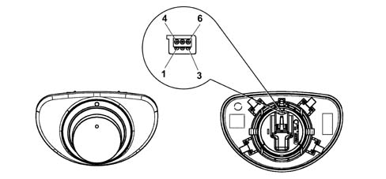

SUN ROOF CONTROL UNIT (CTA)
- Path
- Descriptions > 55 ELECTRICAL EQUIPMENT > 5505 INSTRUMENT/GAUGE ELECTRICAL CIRCUITS > 5505A multi-function components > SUN ROOF CONTROL UNIT (CTA)
- Kind
- system description
- Applies to
- all engines; all production periods
- Interactive page
- https://sloeber94.github.io/elrnDB-lThss/en/#/175546
Applies to: all engines; all production periods
COMPOSITION
The Sun Roof Control Unit is an electronic control unit, located under the front centre courtesy light, which controls the movement of the sun roof by means of the sun roof selector (STA).
The CTA is connected with the longitudinal cable as illustrated in the table below.
PIN | FUNCTION |
|---|---|
1 | Earth for STA |
2 | Control from STA pos. A1 |
3 | Control from STA pos. A2 |
4 | Control from STA pos. A3 |
5 | Control from STA pos. A4 |
6 | not connected |
7 | +30 from F-76 CVB |
8 | Vehicle speed signal from NBC |
9 | Remote control from NBC |
10 | Earth |
SUN ROOF SELECTOR (STA)

Sun roof selector Pin Out:
PIN | FUNCTION |
|---|---|
1 | Earth from CTA |
2 | Control for CTA A1 |
3 | Control for CTA A2 |
4 | Dimmed supply |
5 | Control for CTA A3 |
6 | Control for CTA A4 |